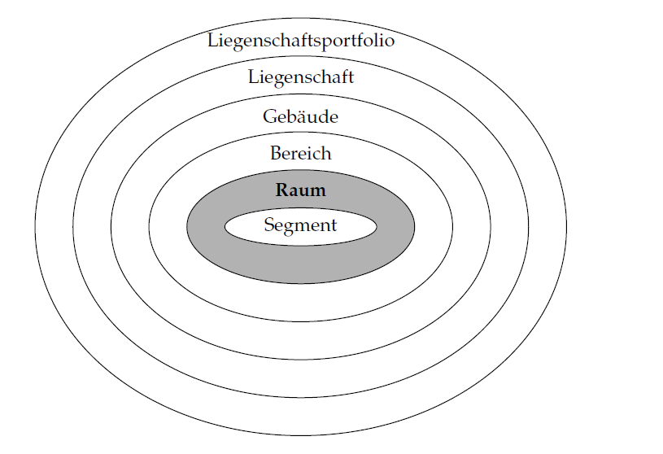

1.1 Gebäudeautomation
üéØ Lernziele
Nach dieser Einheit sind Sie in der Lage dazu * Die Aufgaben von Gebäudeautomation-Management, Raumautomation, und Anlagenautomation abgrenzen * Die Aufgaben auf Feld-, Automations-, und Managementebene abgrenzen
Aufgaben der Gebäudeautomation
- Sicherstellung von Komfort und Sicherheit
- Energieeffizienz
- Betriebskostenoptimierung
- Produktiviätssteigerung
ü߆ Abgrenzung verschiedene Ebenen der Geb√§udeautomation
Struktur nach VDI 3814

Lauckner und Krimmling 2020
Anlagenautomation

die Regelung, Steuerung, Prozessführung und Überwachung von Technikzentralen im Gebäude, u. a. Heizungsanlagen, Anlagen der Lüftungs-, Klima- und Kältetechnik
Raumautomation
dezentrale Teilprozesse, zur Aufrechterhaltung eines lokalen Raumklimas durch Steuerungen und Bedienung der Geräte.
Schalenmodell nach VDI 3813 Blatt 1

VDI 3813 Blatt 1
Segment:
- kleinste Einheit im Schalenmodell
- ein Raum kann aus mehreren Segmenten bestehen,
- die für sich selbst funktionsfähig sind.

Raum:
- ein Volumen, das von sechs Bauteilen abgeschlossen wird
Bereich:
- Zusammenschluss mehrerer Räume
- z.B. Flur mit Toiletten und einigen Büros,
- z.B. eine ganze Etage
- z.B. ein Foyer
Gebäude:
- "Gebäude sind selbständig benutzbare überdeckte bauliche Anlagen, die von Menschen betreten werden können."
1BayBO Art. 2 Abs. 2 [26]
Gebäudeautomation-Management

übergeordnete Prozesse, zur Überwachung und Steuerung (Gebäudeleittechnik)
https://link.springer.com/chapter/10.1007/978-3-319-25876-8_9
Hierarchie der Gebäudeautomation (Automatisierungspyramide)

- Anlagen- und Raumautomation müssen verknüpft sein
- z. B. die Anpassung der zentralen Wärmeerzeugung an den dezentralen Wärmebedarf in den Gebäudezonen
- Verknüpfung erfolgt in der Automationsebene z. B. Prozessüberwachung und Optimierung
Lauckner und Krimmling 2020
Fazit
- Gebäudeautomation ist ein komplexes Thema mit verschiedenen Zielfunktionen und Nutzergruppen
- Einzelne Anlagen müssen gesteuert werden
- Räume müssen der Nutzung entsprechend gesteuert werden
- Gebäudeautomation-Management ist die übergeordnete Instanz, die die Anlagen- und Raumautomation im Besten Fall verknüpft